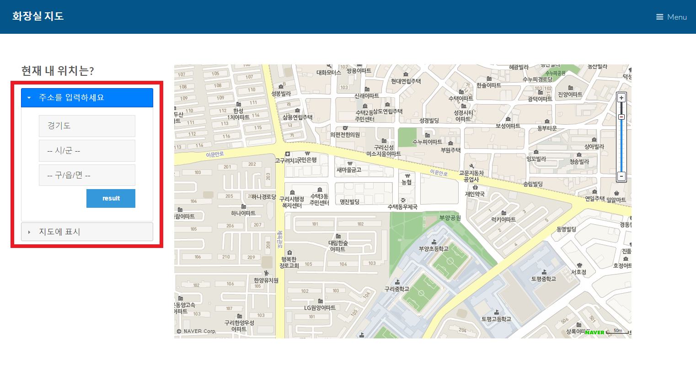

Homework 3
최종 프로토타입
*화면은 90%로 보는것이 제일 보기 좋습니다.*
1.기획개요
▶어떤 사용자와 과업을 대상으로 하는가?
서울에 위치한 화장실은 비교적 지도에서 잘 나와있고 블로그에도 많은 정보가 있고, 게다가 서울화장실 지도라는 앱이 따로 있을 정도이다. 반면 경기도에 위치한 화장실은 블로그에도 지도에도 거의 표시되지않으며 지도는 특정 장소의 위치와 걸리는 시간을 보여줄 뿐 상세한 정보와 걸리는 시간을 서로비교 할 수 없는 불편함이 존재하였다. 따라서 경기도에 위치한 화장실을 찾으려는 사람들을 대상으로 이 웹페이지를 기획하게 되었다.
▶어떤 데이터를 활용해야 하는가?
경기데이터드림(http://data.gg.go.kr/portal/mainPage.do)에서 경기도내에 위치한 공중 화장실 정보를 조회 할 수 있는 open api를 제공하고 있습니다. xml형태로 되어 있으며 화장실 위치, 남성/여성/장앤용 소변기유무, 개방시간을 확인 할 수 있습니다.
▶어떤 서비스를 제공하려 하는가?
사용자가 선택한 지역에 있는 화장실의 위치를 지도에 표시해서 보여줍니다. 지도에 표시된 마커를 선택하면 현재 위치에서부터 걸리는 시간을 보여주고 화장실의 상세정보를 확인 할 수 있습니다.
2.사용자와 과업분석
사용자 과업분석[1]
첫번째 사용자의 과업분석 동영상을 보면 무언가의 위치를 찾을때 지도를 먼저 떠올려 검색하는 경향이 있었다. 조사결과 구글지도는 아무래도 외국회사의 지도다보니 네이버 지도처럼 위치정보를 거의 얻을수 없었다. 관광지의 주변 화장실을 검색하는 것임에도 불구하고 너무 먼 곳의 화장실까지 나오는것을 보았다.
검색과 길찾기의 기능이 따로따로 분리되어 있어서 현재위치에서부터 선택한 도착지까지의 걸리는 시간과 또다른 도착지까지의 걸리는 시간을 비교하는데 검색과 길찾기를 왔다갔다해야하는 매우 큰 불편함이 있었다.
-해결방안 : 아무래도 화장실 지도다 보니 급한 사람들에게는 걸리는 시간이 제일 크게 여기진다고 생각해서 마커를 클릭했을시 바로바로 걸리는 시간이 뜨도록 구현 할 것이다.
마커로 표시된 화장실을 클릭하면 화장실의 이름과 주소까지만뜨고 더 자세한 상세내용까지 나와있지 않았다. 그리고 사용자로부터 상세보기라는 버튼을 누르면 새로운 탭이 뜨는 불편함을 나중에 추가적으로 듣게되었다.
-해결방안 : 마커로 표시된 화장실을 클릭하면 화장실의 상세정보(장애인화장실 유무, 어린이전용 유무, 건물이름, 전화번호, 개방시간)을 추가적인 클릭없이 말풍선에 바로 띄울수 있도록 할 것이다.
사용자 과업분석[2]
두번째 사용자 과업분석 동영상은 기획개요와도 관련있는 내용이다. 사용자에게 광화문화장실을 검색해보라 했을때 지도를 클릭하는 것처럼 보였으나 최근까지 큰 시위가 계속해서 일어났던 장소여서 그런지 지도에는 없는 화장실을 블로그에서 200여개의 많은 개방화장실의 위치와 개방시간을 알려주고있었다. 게다가 조사결과 TTOK라는 서울 화장실 지도라는 앱도 존재하였다. 하지만 경기도의 일산, 파주도 많은 사람들이 오가는 곳임에도 불구하고 어느 블로그에서도 관련 자료를 찾을수 없는 모습을 발견했다. 광화문 화장실을 검색했을 때는 제일 윗단에 지도가 있었지만, 경기도 지역 화장실을 검색했을시에는 지도보단 다른 화장실수리 관련 게시글을 먼저 볼 수 있었다.
이처럼 지도에는 없는 화장실을 사용자가 직접 추가하는 기능을 넣어볼 예정이다. 자바스크립트의 파일 입출력을 활용해서 구현해볼 생각이다.
3. 데이터 식별 및 검증
활용하려는 데이터는 '경기데이터드림'에서 제공하는 화장실 관련 API이다. 아래사진의 API로 경기도내에 위치한 공중 화장실 정보로서 화장실의 위치(소재지주소, 경도, 위도), 남성/여성/어린이용 변기수 및 소변기수 등의 정보를 알수 있으며, 그 위치를 네이버 지도api를 활용해서 마커를 찍을 예정이다.

아래의 버튼을 클릭하면 경기데이터드림 사이트에서 화장실 관련 Open API들을 신청하여 활용 할 수 있습니다.
아래의 버튼은 공공데이터api를 활용한 모습이다. 네이버 지도api도 가지고 왔다.
4. 대화형 프로토차입의 상호작용
▶상호작용의 4단계
표명
:추상적인 목표를 구체적인 입력 형태로 전달
현재위치에서 가까운 거리에 있는 화장실의 위치를 띄워주는 추상적인 목표를 위해 왼쪽에 두가지 방식의 입력형태를 아코디언ui를 이용해서 둘중 하나만 할 수 있도록 만들었다.
변환
:입력된 정보를 바탕으로 시스템 처리 (공공 데이터 접근)
입력된 정보(주소 또는 지도상에서 클릭한 좌표)에서 특정 지역의 코드를 가져와 그 지역의 xml을 가져와 처음부터 끝까지 루프를 도는데 선택한 특정 상세주소를 포함하면 그 화장실의
좌표값을 전역변수로 선언해놓은 배열에 저장한다.
표현
:처리 결과를 시각적 출력 형태로 전달
전역변수로 선언해놓은 배열을 가져와 좌표값을 지도에 마커로 표시하여 사용자가 한눈에 볼 수 있도록 한다.
평가
:출력된 정보를 바탕으로 목표 달성 여부를 확인
사용자가 선택한 주소의 화장실을 모두 마커로 표시하고, 결과값이 없으면 alert로 에러메세지를 띄운다. 그리고 지도에 표시된 마커를 누르면 그 화장실의 상세정보를 띄워서 목표 달성 여부를 확인한다.
▶심성 모형의 효과적 전달
아코디언 UI를 이용하여 둘중 한가지방법을 이용해서 현재 나의 위치를 나타낼수 있게끔 만들었다. 아코디언 첫번째 칸에는 '주소를 입력하세요'라는 문구를 두번재 칸에는 '지도에 표시'라는 문구를 넣었다. 각각의 칸에는 result , 선택하기 버튼이 있어서 버튼을 클릭해야 검색 결과가 지도에 뜰수 있도록 만들었다. 왼쪽에서 사용자가 검색조건을 입력한 다음에, 오른쪽 지도에서 결과를 확인 할수 있도록 이원화시켜 주 기능을 더 돋보이도록 간단하고 깔끔한 인터페이스를 구현했다. 검색결과로 나온 여러 마커들에 마우스를 올리면 건물의 이름름 띄우도록 했다.
5. 초기 대화형 프로토타입

[그림1] 초기 스토리보드
[그림2] 주소로 검색

[그림3] 지도에 선택

[그림4] 검색 결과화면
▶검색방법
[그림1]에서 초기단계 스토리보드에서 지도에 표시, 주소로 검색 두가지 방법으로 자신의 위치를 나타낼수 있게 제작을 했다. 이 두가지방법을 제일 잘 표현 할 수 있을 거 같은 아코디언 형태의 jquery UI로 표현했다. 오른쪽에는 지도를 크게 하여 한눈에 결과를 볼수 있도록 계획 했고 초기 스토리보드와 유사하게 인터페이스를 구현하려고 노력했다.
▶주소로 검색
[그림2]에서 처럼 우선 경기도의 31개의 시/군를 드롭다운 메뉴형태로 만들었다. 31개의 시/군에 따른 각각의 동/읍/면으로 chain()을 하여 연결 하였다. 그래서 시/군를 선택하지 않으면 그 밑의 동/읍/면을 선택할 수 없게 하였다. result버튼을 누르면 사용자 드롭다운 형태에서 선택한 요소가 변수에 저장된다. 5000여개의 정보중에서 시/군과 동을 찾아 파싱하려면 굉장한 많은 시간이 소요된다. 따라서 그중 시/군 변수에 저장된 요소는 시군코드로 변환되어 api요청 변수로 들어간다. api요청 변수로 들어가 탐색 범위를 줄이고 그중에서 row에 해당하는 동명이 있으면 표시할 마커 배열 변수에 위도와 경도를 저장한다.
▶지도에서 검색
[그림3]에서 처럼 지도에 표시 아코디언을 누르면 선택하기 버튼이 있다. 버튼을 누르면 현재 화면에 떠 있는 마커들을 모두 지우고 자신의 위치를 지도에 클릭 할 수 있다. 클릭한 위치의 정확한 주소를 역지오코딩을 통해서 알림을 띄우주고, 해당하는 주소를 " "단위로 나누어 시/군과 동/읍/면을 뽑아와 위에서와 마찬가지로 api요청 변수로 들어가 파싱한다.
▶네이버 지도
대화형 프로토타입에서 볼 수 있듯이 네이버 지도api를 사용했다. https://developers.naver.com/main/ 네이버 개발자사이트 링크에 들어가면 지도api를 신청하여 받을수있고, 활용방법도 매우 다양하게 많이 나와있다.
위성지도, 도형띄우기, 마커띄우기등등 예제로 충분히 이해하기 쉽게 설명 해놓았다. 이 사이트를 참고하여 검색결과를 여러개의 마커로 표시하여 지도에 나타낼수있다. 위에서 파싱하는 과정에서 공공데이터 api의 내용중 위도와 경도도 함께 포함되어있어 그 정보를 전역배열에 저장하여 마커를 찍을때 그 갯수만큼 반목문을 돌려 마커를 찍었다. 앞으로 구현할 내용으론 마커를 클릭하면 정보창이 떠서 화장실의 정보를 볼 수 있게 할 것이다.
▶결과화면
[그림4]에서 처럼 선택한 위치의 주변 화장실을 마커로 띄운다. 지도상에서 클릭한 위치는 현위치라는 라벨과 함께 뜬다. 지도에 mouseenter, mouseleave 이벤트 핸들러를 달아서 마커위에 마우스를 올리면 건물이름(라벨)이 보여지도록 한다. 또 마커위에서 마우스가 사라지면 라벨을 지운다. 마커를 클릭시 click 이벤트 핸들러를 달아서 화장실에 대한 정보창을 띄울 예정이다.
▶대화형 프로토타입
아래의 버튼을 누르면 대화형 프로토 타입으로 넘어갑니다.
사용시 반응이 느릴 수도 있으므로 천천히 작동 시켜주세요.
▶사용자 대상 실험(동영상)
▶각사용자별 행동관찰
사용자1은 메인화면에서 바로 이미지를 클릭하여 들어갔다. 그리고 주소로 검색하는 기능을 바로 실행하였고, 여기까지는 행위유도성은 잘 맞아떨어졌다. 하지만 두번째 기능인 지도에서 클릭해서 주변 화장실을 찾는 기능은 잘 이용하지못하는 모습을 보였다. 이부분에 대해서는 모든 사용자가 그러는지 확인 해볼 필요가 생겼다. 그렇지않다면 아코디언 UI를 수정해야겠다고 생각했다.
사용자2가 실험했을시에는 예상치 못한 오류가 발생했었다. 게다가 사용자2가 검색이 완료되기전에 다른 것을 막 클릭해버려 아무것도 되지않고, 멈춰버리는 현상도 보였다. 느린 반응에 대한 개선이 필요할 것 같다고 생각했다. 아무래도 화장실을 찾는 사람의 특성상 빠르게 작동하지않으면 계속해서 클릭하려는 특성이 원인인것 같다.
사용자3은 내가 예상했던 행동의 순서로 행동해주었다. 역시 잘 작동했고, 사용자도 만족해 하는 모습을 볼 수 있었다. 하지만 두번째 검색때 도로명 주소의 역지오코딩 문제로 개선해달라는 요청이 있었다.
사용자4가 실험했을때는 검색결과가가 0인 것이 너무많이 나왔다. 이부분은 공공데이터의 api가 내용이 적은 부분이 였다. 역시나 api로는 데이터량이 역부족인 것이 눈에 보였다.
6. 최종 프로토타입
▶개선 되기전 프로토타입
[그림1] 초기 프로토타입
jquery ui를 사용해서 아코디언 형태의 메뉴를 사용해서 주소로 입력받는 방법과 지도에 직접 자신의 위치를 선택하는 방법을 했었지만 사용자 대상 실험에서 이를 찾지못하거나, 이해하지 못한 사용자들이 대다수였다. 개발자인 나의 생각만으로 진행하다가 다른사용자가 사용하는 것을 보고 개선해야겠다고 생각한 첫번째 문제였다.
[그림2] 부족한 정보
초기 프로토타입은 첫번째로 네이버지도api를 사용했다. 네이버 지도를 선택한 이유는 개발자인 내가 가장 많이 사용하는 앱이였고, 사용자 과업분석때도 대부분의 사용자가 네이버 검색 포털을 이용해서 검색했기 때문이다. 그리고 경기도에 소재하는 화장실에 대한 웹페이지였기 때문에 외국정보가 많은 구글보다는 네이버를 택하였다. 하지만 구현과정에서 네이버의 지도 api가 많이 바뀌고, 버전도 바뀌어 구현도중 검색으로만 넉넉치 않았다.
두번째로 아직 덜 구현이 된 상태여서 화장실을 검색후 얻을 수 있는 정보가 존재하지않았다. 단순 마우스 오버 이벤트로 해당 건물의 이름만 보여줬었다. 사용자가 유용하다고 느낄수 없었다.
[그림3] 지도에 선택
지도위에서 현재 위치를 선택하여 정보를 얻는 방법이였다. 정확한 사용법을 모르는 사용자들은 잘 사용하지 못하는 모습을 보았다. 마우스를 한번만 선택해야 되는데 더블 클릭한다거나 하여 잘못된 파씽정보가 뜨기도 했다.
개발자인 나의 편리성만 생각하고 바로 alert함수를 통해서 주소를 띄우기만 했는데 그것을 출력을 시키는 것이 더 나을 것이라 판단했다.
▶개선 된 후 프로토타입

[그림1_1] 라디오버튼으로 개선
아코디언의 형태의 메뉴에서 라디오 버튼으로 개선된 모습이다. 라디오버튼을 택하므로써 해당하는 라디오버튼을 눌렀을때만 아래의 div영역이 보여지도록 구현했다. 이로써 더 눈에 들어오고 빠르게 사용자들도 사용법을 알 수 있도록 구현하였다.

[그림2_1] 구글지도와 정보창
가장 큰 변화였던 구글지도 api를 사용한 모습이다. 겉으로 보기에는 개선된 점이 없다고 생각 할수도 있지만 구글지도 api를 사용하면서 더 빠르고 정확한 정보들을 가져올 수 있었고, 개발자인 내가 구현하기가 네이버 지도api보다 더 편했다. 지도부분에 구현하는 부분이 많아서 코드를 바꾸는 과정에서 꽤나 오랜시간이 걸렸다.
두번째로 사용자가 이 웹페이지가 유용하다고 느껴질 수 있도록 화장실의 정보를 마커를 클릭하면 정보창이 뜨도록 구현했다. 남여공용화장실인지 알 수 있고, 남자화장실, 여자화장실, 장애인화장실, 해당 건물의 전화번호까지 띄웠다. 또 다른 창을 띄우기에는 화장실에 대한 정보를 검색하는 사용자의 입장에서는 바로 뜨는 것이 더 유용 할 것이라고 생각했다.

[그림3] 개선된 지도에 선택
먼저 아코디언 형태의 메뉴를 없애고 라디오 버튼으로 선택하면 간단한 설명과 함께 선택하기 버튼이 뜬다. 선택하기 버튼을 누르면 지도위에 클릭이벤트 핸들러가 달아지고 지도의 한곳을 클릭하면 역지오코딩을 통해서 그곳의 우리가 알수있는 실제 주소가 밑에 현위치 칸에 나타난다. 이로서 사용자는 자신이 누른 위치의 자세한 주소를 알 수 있다.
마찬가지로 현위치를 바로 마커위에 정보창에 뜨게 하고 주변의 화장실들의 마커들을 보여준다. 마커를 누르게되면 위에서와 마찬가지로 정보창이 뜨게된다. 정보창아래 '도착지로' 라는 버튼을 누르게 되면 현위치가 시작 주소 버튼누른 그 위치가 도착지로 지정이되면서 길찾기 버튼을 누르게되면 구글 지도api에 의해서 길찾기가 행해진다.
7. 최종 사용성 평가
▶계획
가설1. 아코디언의 형태보다 라디오버튼이 사용자가 더빠르게 방법을 인식할 수 있다.
가설2. 원하는 목적지들이 미리 나와있어서 길찾기 하는데 편하다.
<실험조건>
1)독립변수 : 아코디언 형태와 라디오 버튼 변화 / 길찾기
2)종속변수 : 라디오버튼이 더 편하다. / 길찾기가 편리하다.
3)제어변수 : 실험 장소 (집)
4)무작위 변수 : 연령대, 성별
▶준비
환경은 집에서 실험하였다. 참가자는 개발자인 나를 제외한 가족이다. 이번 사용자는 총 4명이여 여자2명 남자 2명이다. 나이는 20세부터 58세까지 있다. 사용자모두 초기 프로토타입과 최종 프로토타입을 사용하는 집단 내 평가를 하였다.
저번 사용성평가와 마찬가지로 참자가들에 대한 존중과 배려를 위하여 참가자가 가지는 권리를 충분히 설명하고, 설문지에 문서화 시켜 동의를 얻었다. 충분한 리허설과 메뉴얼에 따른 설명을 충분히 하였다. 실험 종료 후 두가지 웹사이트의 차이를 알려주었다.
▶시행
참가자 모두 두 웹사이트를 사용해보고, 그에따른 설문조사도 하였다.

▶사용자 대상 실험(동영상)
▶설문지 제작
1번 웹페이지는 초기 프로토타입이다. 2번 웹페이이지는 최종 프로토 타입이다. 두개의 프로토타입을 시행해보고
동일한 질문을 하였다.

▶실험 결과 분석

[그림5]실험 시간 그래프

[그림6]설문 결과
▶사용자4명에게 모두 동일한 과업을 시켰다. "구리시 수택동에 있는 가까운 화장실들을 보여주세요. 어떤 방법을 사용 하던 상관없습니다." 1번 웹페이지(초기)는 사용자 4명 모두 주소를 입력하는 방식으로 검색을 실행하였다. 아코디언의 형태였던 1번 웹페이지는 주소를 검색하게끔 이미 켜져있는 상태라서 모두 쉽게 찾았지만 나중에 실험이 끝나고나서 아코디언 두번째에있는 지도에서 클릭기능을 전혀 알지못했다. 사용자2는 중간에 지도를 클릭하는 바람에 페이지가 다운되는 상황이 벌어졌었다.
반면에 2번 웹페이지(최종)는 사용자 4명중 2명이 지도에서 클릭하여 찾는 방법을 사용하였다. 구리의 위치를 알고있는 두 사용자는 빠르게 구리의 위치를 찾았고, 속도 또한 빨랐다. 그래프에서 볼수 있듯이 같은 과업에 있어서 아코디언보다 라디오 버튼의 기능을 하는 2번웹페이지가 모두 검색 결과를 빠르게 하였다.
▶[그림6]은 사용자 4명이 작성한 설문지의 결과를 나타낸 것이다. 초기 웹페이지같은 경우는 구현이 완벽하게 된 페이지가 아니라서 그런지 설문지 역시 그런 결과를 반영하였다. 사용편리성에 대해서는 라디오 버튼이 있는 최종 프로토타입이 높은 평가를 받았고, ui관련 부분은 두개의 프로토타입이 비슷한 위치에 조작과 지도가 있어서 비슷한 평가를 받았다. 오류에 대한 질문에서 역시 오류를 모두 alert함수로 띄운 1번 프로토타입에 비해 안에서 이미 오류 처리를 하는 최종 프로토타입이 사용자들이 사용하기에 더 편리하게 보았다. 서술하는 질문에서 다양하고 많은 의견이 나왔다. 서술하는 질문 역시 완성도가 훨씬 높은 2번 페이지가 좋은 평을 받았다. 사용자3은 길찾기 기능에서 시간이 나오지않는것에 대한 아쉬움을 언급했다.
▶논의
| 과제2후 개선해야할 사항 | 최종 |
|---|---|
| 화장실에 대한 구체적인 정보 -> 해당하는 마커를 클릭시 정보창에 간단한 정보가 나타난다. | O |
| 도로명주소 인식 -> 추가적인 파싱필요 또는 추가적인 공공 데이터api확인 | 역지오코딩으로 해결 O |
| api파싱의 느린 반응문제로부터 나타날 수 있는 오류 -> 프로그래스바를 나타내서 사용자가 아무동작을 취하지 않게 UI구성 | X |
| 지도에 표시방법 -> 지도위에 클릭이 아닌 마커 드래그 | O |
| 화장실 추가 기능 -> 기능 삭제 | O |
▶결론
실제로 내가 직접 계획한 웹사이트를 만드는 것이 처음이였다. 첫번째 과제였던 데이터 파씽 과제에서 처음 접하는 웹인데 너무나 많은 것을 알아야했었다. html, xml, js,jquery 등등.. 하면서 xml보다 json이 파싱하기가 훨씬 편하다는 것을 느꼈다. 사전형처럼 key와 value로 되어있기 때문이다. 그리고 두ㅂㄴ째 과제에서 역시 어려움이 많았다. 지도라는 것을 처음 생성하고 이것 저것하면서 네이버보다는 역시 구글이구나 라는 걸 느꼈고 그래서 과제3때 지도부터 코드를 다시 짜는 것이 시간적으로 많이 소비 되었다. 초기 프로토타입보다는 많은 것들이 발전하고 기능이 추가되어서 더 나은 결과를 만들 수 있었던거 같다. 열심히 만들었는데 비록 적은 숫자지만 주변 사람들이 만족하는 모습을 보고 뿌듯함을 느꼈다. 과제2때에 개선해야할 사항들이 많았는데 하나를 제외하고 거의 해결해서 뿌듯하다. 그 하나인 프로그래스바를 이용해서 나타내는 것은 이번 최종 프로토타입에서도 느낀점중 하나이다. 사용자의 예상치 못한 행동들을 막기위해 더 개선하면 좋을 것같다. 그리고 길찾기 기능을 마지막에 넣느라 많은것을 못해보고 넣은 점이 아쉽다. 위에서 말했듯이 시간까지 나왔으면 더 좋을거같다.